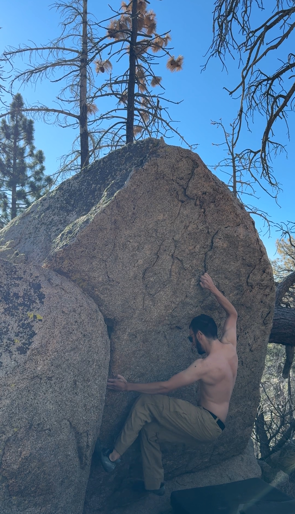

Mt. Waterman
Mt. Waterman is a wonderful 8041ft peak in the San Gabriels which is mostly known for its innactive ski resort which once was a thriving local business. The history of bouldering on the tip top of the peak is non-existent, although Lance Carerra does have some boulders much lower on the peak which we still need to reach for documentation! In general, the possibities for good rock climbing on Mt. Waterman are totally endless.
There's a gigantic boulder field at the top of the peak which you must reach by hiking at least 3 miles one way to get to. Doing so with a crash pad is some work, but the climbing quality is worth every burnt calorie. The rock type stays pretty consistent but it much different than that of Winston Peak and Horse Flats. From our exploration, the better, more featured rock is north facing and lower on the slope which faces West Twin Peak.
Disclaimer which we shouldn't have to repeat but will anyway: Please reach out to us here if we get anything incorrect.
Surprise Boulder
This one is sort of close to the road and trailhead of Waterman. It's got a big tree trunk leaning against it and the problems are only visible from above the boulder looking down slope.


Spook V1
FA: Matthew Jackson 7/2/2025
Start in the crack on the left then go right and up!
Salad Bowl
In order to reach Salad Bowl, you must ascend Mt. Waterman then descend down the northern face. Salad Bowl is below two big towers and sits on a mini ridge with a big drop off into a gully just behind it. If you need help or want specific directions, please reach out to us.

Lettuce V0
FA: Matthew Jackson 7/2/2025
Start on the crimp and throw for the big salad bowl